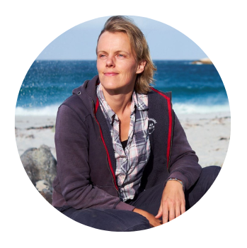
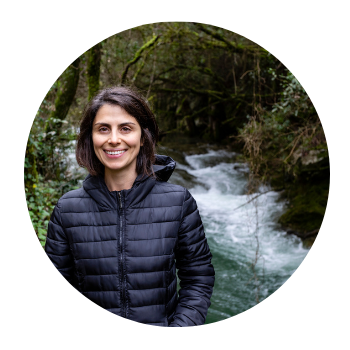

Board members
Amanda Barney
Teem Fish Monitoring
Teem Fish Monitoring is a fisheries electronic monitoring technology company dedicated to bringing the best automation tools and efficiencies to our data collection and analysis processes.
Andrew J Jansen
Department of Climate Change, Energy, Environment and Water

Asta Audzijonyte
University of Tasmania (Australia) & Nature Research Centre (Lithuania)
ML models for citizen science and social media data, especially models for fish size determination

Catarina Silva
University of Coimbra & MARE (Portugal)
ML models for automatic identification of species and sizes from images
Kieran Hyder
CEFAS
Kim Friedman
FAO
Lisa Kellogg
Virginia Institute of Marine Science
Luyen Chou
GotOne Media LLC
Nathaniel “Than” Hitt
U.S. Geological Survey Eastern Ecological Science Center
Steve Munch
University of California, Santa Cruz
General members
Ben Letcher
U.S. Geological Survey
Christian Skov
National Institute of Aquatic Resources, Denmark
Dan Morris
Google AI for Nature and Society
Eelke Folmer
Aeria
Ercan Avsar
Technical University of Denmark
Iñaki Quincoces
AZTI

Jimmy Freese
Ai.Fish (USA)
Ai.Fish is a Computer Vision and Artificial Intelligence company with significant ongoing R&D in data science, deep learning, convolutional neural networks and object detection and tracking to address problems in marine sustainability and conservation.
Justas Dainys
Nature Research Centre
Mark Sudul
Archipelago
Noel Clark
Colorado State University
Raiana McKinney
The Pew Charitable Trusts
Sebastian Uhlmann
Dr Snapper, Flanders Research Institute for Agriculture, Fisheries and Food (ILVO), Vrije Universiteit Brussels (VUB)
Thor Veen
Aeria
Tim Sartwell
NOAA Fisheries
Victor Anton
Wildlife.ai
Yoichiro Kanno
Colorado State University